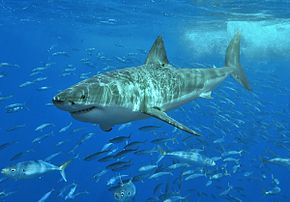

|
 Le requin (nom scientifique selachimorpha, de la classe des chondrichthyes, elasmobranchii) est un poisson cartilagineux présent dans tous les océans du globe et dans certains grands fleuves. Il existe plus de 465 espèces regroupées en 35 familles. Animal trop souvent associé au danger, il est pourtant inoffensif, apprenons ici à le connaître. Voici son cri ... |